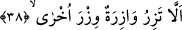

tarafından yapılmış da olsa mazlumun çağrısını geri çevirmem.” Yine İbrahim’in
suhufunda: “Akıllı olanın aklı kendisine taşkınlık çıkarmadıkça; Rabbine münâcât ve
O’nun sun’unu tefekküre ayıracağı anlarının bulunduğu gibi nefsinin yaptığı ve
yapmadığını muhasebe edeceği ve yeme-içme vb. ihtiyaçlarına ayıracağı vakitleri de
bulunmaktadır. Akıllı olanın zamanını tanıması, o zamana göre davranması ve dilini
muhâfaza etmesi gerekir. Her kim kelamının amelinden olduğuna inanırsa, kendisiyle
ilgili şeylerin hâricinde kelâmı az olur, sözleri ve vecizeleri vardı.” [113] buyurmuştur.
A’la sûresinin sonundaki âyetlerde de Musa (a.s.)’a gönderilen sayfalarda neler
olduğu bildirilmiştir. Fethu’r-Rahman’da da böyledir. Musa (a.s.)’ın âyette İbrahim
(a.s.)’e takaddüm etmesinin sebebi, Musa’nın sahifelerinden müteşekkil olan Tevrat’ın
Mekkeliler indinde daha meşhur ve mevcûd olmasındandır.
Fakir [Bursevî] der ki: En yakın olanın (Tevrat’ın) daha çok tanınması sebebiyle bu
âyet, en yakından en uzağa doğru bir yükseliş babında peygamberleri sıraya dizmiştir.
Musa (a.s.)’ın İbrahim (a.s.)’den önce zikrolunmasının bir diğer sebebi de, Musa
(a.s.)’ın İbrahim (a.s.)’ın aksine hakikaten bir kitaba sâhip olmasıdır.
38. Gerçekten hiçbir günahkâr, başkasının günah yükünü yüklenemez.
Dikkat ediniz! Hiç bir nefsin günah yükü kendisinden alınarak bir başkasına
yüklenmez ve hiç bir kimse karşısındaki kişinin cezâdan kurtulması için onun
günahlarından dolayı sorguya çekilmez.
Âyetteki “vâzire”den maksad, kendisinden günah sâdır olan kişidir. Buradaki
yükten/yüklenmekten murad da günah işlemesi sebebiyle üzerinde ağırlık taşıyan kimse
değildir. Şâyet böyle olsaydı o zaman mânâ: “Sırtında hiç bir yük bulunmayan kimse
başkasının yükünü yüklenmez” olurdu. Zira üzerinde ağırlık bulunmuş olsaydı,
başkasınınkini değil ancak kendisininkini taşırdı. Bu âyette Velid b. Muğîre’nin günahını
taşımayı üzerine alan kişinin sözünün bâtıl kılınışı vardır. “İsrailoğullarına şöyle
yazdık: Kim bir cana kıymamış ya da yeryüzünde bozgunculuk yapmamış olan bir
canı öldürürse, sanki bütün insanları öldürmüş gibidir.” (el-Maide 5/32) âyeti ise
bu mânânın şümûlü dâhilinde değildir. Çünkü bu âyetin mânâsı kişinin diğer katillerin
işlemiş olduğu katlin günahını doğrudan üstleneceği şeklinde değildir. Bilakis onun
doğrudan katle yönelmesinden ve daha kötüsü insanların ölümüne delâlet ve sebebiyet
veren günahdan emin (suçsuz) değildirler. Bu nedenle herkes kendi günahını taşır.
Rasûlullah (s.a.)’ın: “Her kim kötü bir âdet vaz’ederse kıyâmet gününe kadar onun ve
onunla amel edenlerin günahı kendi üzerinedir”[114] buyruğu da bu kabildendir ki zira
bu yük o âdeti koyana âid olan saptırma/idlâl günahıdır.